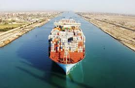
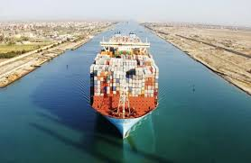
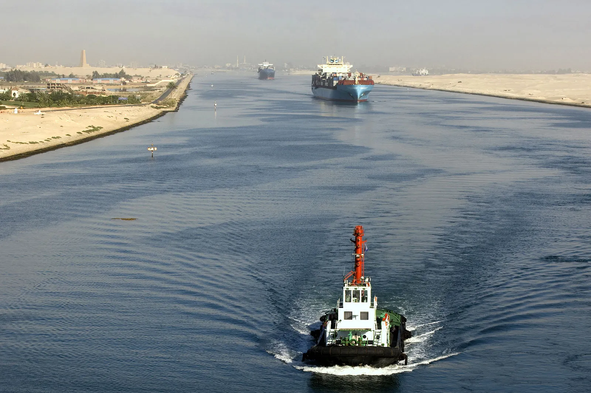
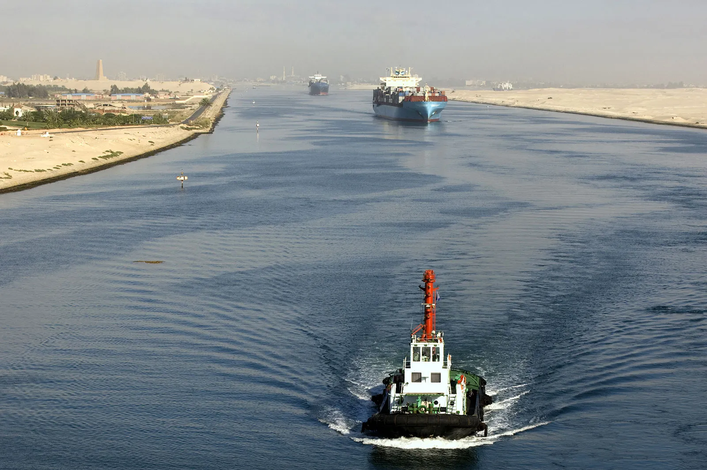

.jpg) 

Suez Canal
Home The modern Suez canal that was built in the 19th century connects the Red Sea with the Mediterranean in Egypt. The Isthmus of Egypt is so narrow at that point that it suggested the building of a canal to many people in antiquity, and in fact many such canals were built. Apparently, they were all shallow waterways, that took advantage of existing rivers and waterways in the Nile delta, and led to the Nile rather than the Mediterranean sea. The southern section of the modern canal runs along the ancient routes. The inscriptions in the tomb of Weni the Elder, who lived during the 6th Dynasty of the Old Kingdom (c. 2407-2260 BC) tell us a lot about Egyptian canal building and the reasons for building them - (for war ships and for transporting monument stone). Scholars are still debating, however, whether his waterways ran all the way from the Mediterranean to the Red Sea. A canal was also supposedly built by Thutmose III in about 1500 B.C.E. Inscriptions of Rameses 2 (1279-1212 BC) claim that he finished (or repaired) a canal leading from the Nile to the Red sea via the wadi Tumilat and the Bitter lakes. Sometime in the next 600 years it must have silted up because Nekhau (Necho) 2 (609-594 BC) began and later abandoned its re-excavation. Herodotus presumably had no access to the earlier inscriptions when he wrote: This man (Necho) was the first who attempted the channel leading to the Erythraian Sea, which Dareios the Persian afterwards completed: the length of this is a voyage of four days, and in breadth it was so dug that two triremes could go side by side driven by oars; and the water is brought into it from the Nile. The channel is conducted a little above the city of Bubastis by Patumos the Arabian city, and runs into the Erythraian Sea: and it is dug first along those parts of the plain of Egypt which lie towards Arabia, just above which run the mountains which extend opposite Memphis, where are the stone-quarries,--along the base of these mountains the channel is conducted from West to East for a great way; and after that it is directed towards a break in the hills and tends from these mountains towards the noon-day and the South Wind to the Arabian gulf. Now in the place where the journey is least and shortest from the Northern to the Southern Sea (which is also called Erythraian), that is from Mount Casion, which is the boundary between Egypt and Syria, the distance is exactly a thousand furlongs to the Arabian gulf; but the channel is much longer, since it is more winding; and in the reign of Necos there perished while digging it twelve myriads of the Egyptians. Now Necos ceased in the midst of his digging, because the utterance of an Oracle impeded him, which was to the effect that he was working for the Barbarian: and the Egyptians call all men Barbarians who do not agree with them in speech. Herodotus, Histories 2.158, translated by Macaulay Project Gutenberg Darius put up monuments to his feat along the length of the canal The one at Suez states amongst other things: 'I, Darius, Great King, king of kings, king of the countries of all languages, king of the wide and far-off earth, son of Hystaspes the Achaemenid. say: I, the Persian, with the Persian (soldiers), have taken Egypt. I gave the order to dig this stream from the river which is in Egypt (Piru is its name) to the River Amer sea which comes out of Persia. This stream was dug as I have ordered, and the vessels journeyed on this stream from Egypt to Persia, as I have ordered.' (Re-translated from a French translation in Vincent Scheil's, Inscription de Darius à Suez, Le Bulletin de l’Institut français d’archéologie orientale.30 (1931), p.297)

Suze Government History
Home The modern Suez canal that was built in the 19th century connects the Red Sea with the Mediterranean in Egypt. The Isthmus of Egypt is so narrow at that point that it suggested the building of a canal to many people in antiquity, and in fact many such canals were built. Apparently, they were all shallow waterways, that took advantage of existing rivers and waterways in the Nile delta, and led to the Nile rather than the Mediterranean sea. The southern section of the modern canal runs along the ancient routes. The inscriptions in the tomb of Weni the Elder, who lived during the 6th Dynasty of the Old Kingdom (c. 2407-2260 BC) tell us a lot about Egyptian canal building and the reasons for building them - (for war ships and for transporting monument stone). Scholars are still debating, however, whether his waterways ran all the way from the Mediterranean to the Red Sea. A canal was also supposedly built by Thutmose III in about 1500 B.C.E. Inscriptions of Rameses 2 (1279-1212 BC) claim that he finished (or repaired) a canal leading from the Nile to the Red sea via the wadi Tumilat and the Bitter lakes. Sometime in the next 600 years it must have silted up because Nekhau (Necho) 2 (609-594 BC) began and later abandoned its re-excavation. Herodotus presumably had no access to the earlier inscriptions when he wrote: This man (Necho) was the first who attempted the channel leading to the Erythraian Sea, which Dareios the Persian afterwards completed: the length of this is a voyage of four days, and in breadth it was so dug that two triremes could go side by side driven by oars; and the water is brought into it from the Nile. The channel is conducted a little above the city of Bubastis by Patumos the Arabian city, and runs into the Erythraian Sea: and it is dug first along those parts of the plain of Egypt which lie towards Arabia, just above which run the mountains which extend opposite Memphis, where are the stone-quarries,--along the base of these mountains the channel is conducted from West to East for a great way; and after that it is directed towards a break in the hills and tends from these mountains towards the noon-day and the South Wind to the Arabian gulf. Now in the place where the journey is least and shortest from the Northern to the Southern Sea (which is also called Erythraian), that is from Mount Casion, which is the boundary between Egypt and Syria, the distance is exactly a thousand furlongs to the Arabian gulf; but the channel is much longer, since it is more winding; and in the reign of Necos there perished while digging it twelve myriads of the Egyptians. Now Necos ceased in the midst of his digging, because the utterance of an Oracle impeded him, which was to the effect that he was working for the Barbarian: and the Egyptians call all men Barbarians who do not agree with them in speech. Herodotus, Histories 2.158, translated by Macaulay Project Gutenberg Darius put up monuments to his feat along the length of the canal The one at Suez states amongst other things: 'I, Darius, Great King, king of kings, king of the countries of all languages, king of the wide and far-off earth, son of Hystaspes the Achaemenid. say: I, the Persian, with the Persian (soldiers), have taken Egypt. I gave the order to dig this stream from the river which is in Egypt (Piru is its name) to the River Amer sea which comes out of Persia. This stream was dug as I have ordered, and the vessels journeyed on this stream from Egypt to Persia, as I have ordered.' (Re-translated from a French translation in Vincent Scheil's, Inscription de Darius à Suez, Le Bulletin de l’Institut français d’archéologie orientale.30 (1931), p.297)